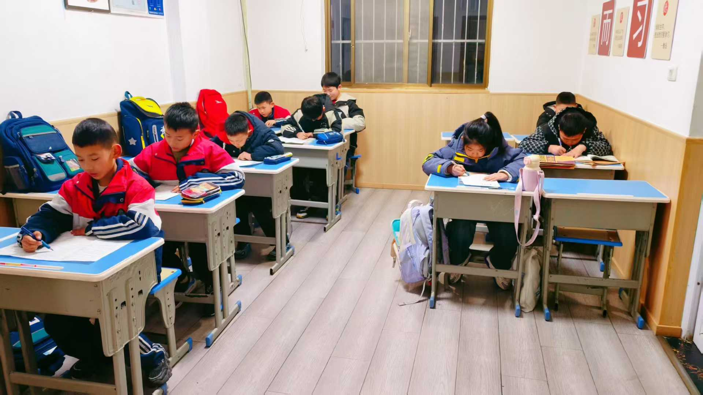
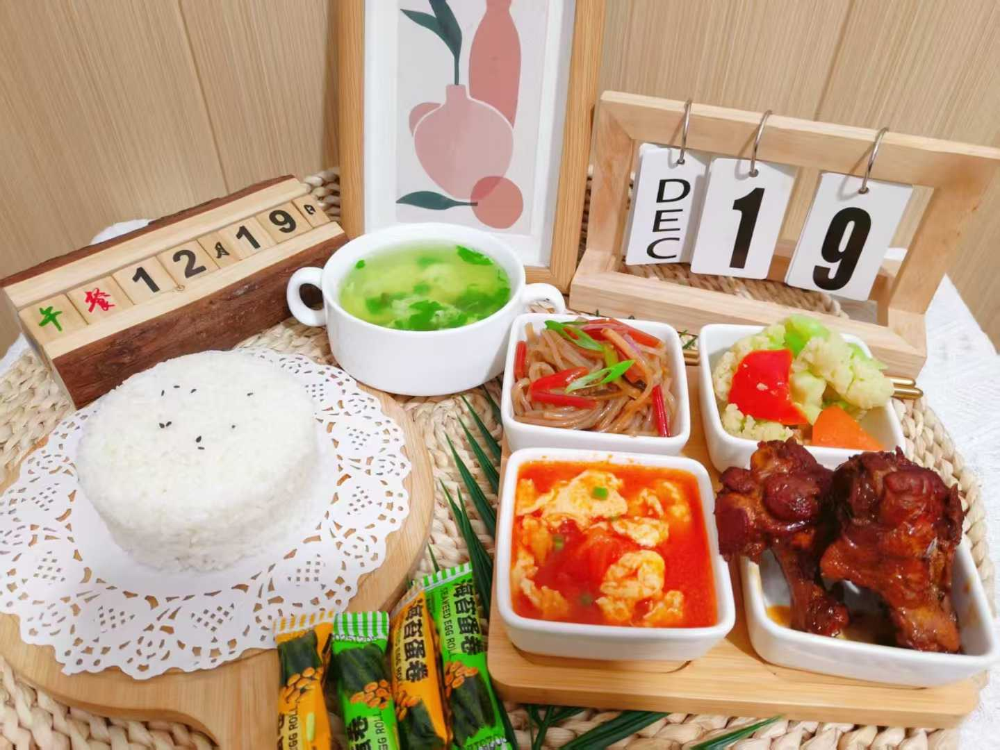
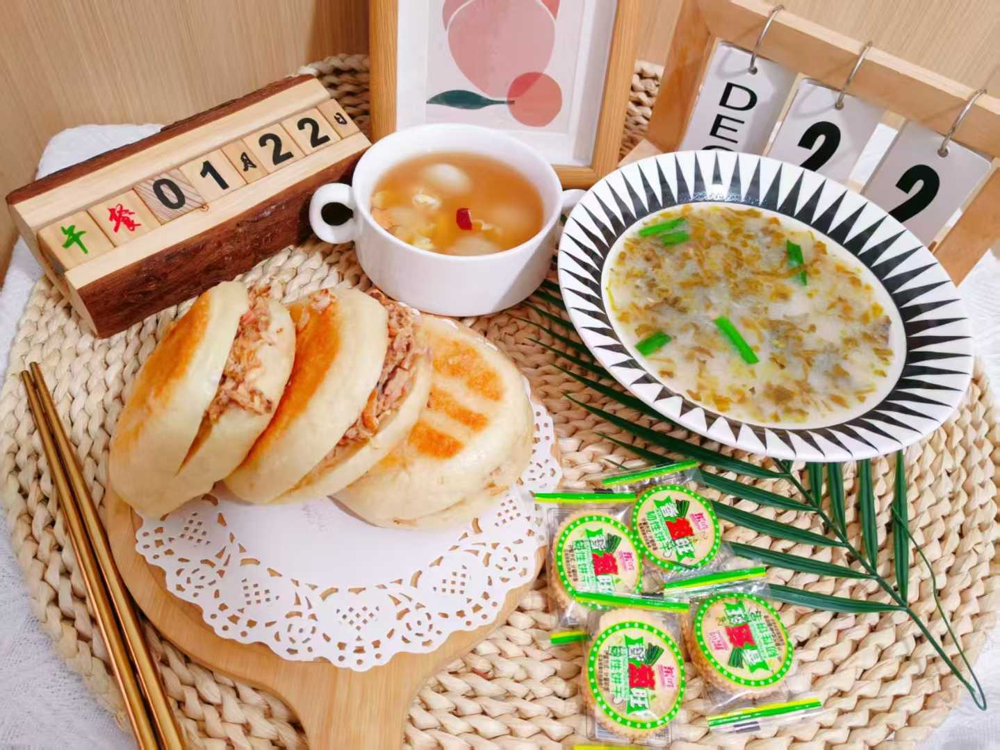

- 定点接校按学校放学时间接孩子
- 营养午餐荤素搭配，记录每日餐食
- 午间照料饭后休息，按安排送校
交给我们 ↗


今日也要好好吃饭这里不是摆拍的样板，而是孩子们在优益的真实片段。
认真学习、好好吃饭，也一起分享快乐。
照片来自优益托管日常记录 · 点击图片可放大查看
根据孩子的放学时间与家庭安排，选择合适的托管方式。
具体服务时段与班额，欢迎电话详询。152 2999 1006
清楚的安排，让孩子的生活有秩序，
也让忙碌的家长少一点牵挂。
老师按学校放学时间定点接孩子。
确认孩子到达，做好到托记录。
好好吃饭，饭后适当休息。
整理好物品，准时回到课堂。
老师按学校放学时间定点接孩子。
先补充能量，再开始晚间学习。
督促完成作业，检查订正并复习预习。
与家长做好交接，沟通当天情况。

被看见，也被认真陪伴。
托管不只是“看着孩子”。从接校到回家，我们关注每一个日常细节。
按学校放学时间定点接校，到托签到；离托与家长做好交接，让孩子的行程有人跟进。
关注荤素搭配与饮食卫生，记录每日餐食。孩子如有过敏或忌口，请在入托前与老师沟通。
老师督促孩子先完成作业，再检查订正、复习预习，在陪伴中帮助孩子建立学习习惯。
围绕孩子的用餐、作业和日常情况与家长保持沟通，有问题及时联系。
老师按学校放学时间定点到校门口接孩子，到托后签到登记。具体接校地点与交接方式，可在参观时与老师确认。
孩子入托后先完成作业，老师督促并检查订正，之后进行复习预习。发现学习问题会及时与家长沟通。
请在入托前主动告知孩子的过敏源、饮食禁忌和口味偏好，与老师确认能否做相应安排，不因隐瞒饮食情况带来风险。
支持按月、按学期咨询报名，欢迎先到店看看环境、与老师沟通。具体班型、费用、请假与退托规则以入托协议为准。
拨打 152 2999 1006，告诉我们孩子的年级和需要的托管时段，与老师约定参观时间即可。
看看真实的环境，认识陪伴孩子的人。
一通电话，约个方便的时间。